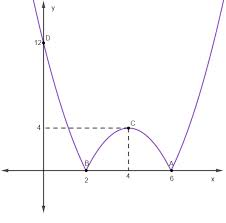

üìç [Checkout de Presen√ßa] M√≥dulo 2 ‚Äì Fun√ß√µes
Nome completo: Diego Serafim de Sousa
Nome do/a Professor/a Tutor/a: Magda Cristina Junqueira Godinho Mongelli
Título da atividade: CÁLCULO I-T01-2023-2
Vencimento: segunda, 14 ago 2023, 23:59
Essa atividade vale presença
No Módulo 2 estudamos diversos tipos de funções e suas representações gráficas. Sabemos que o estudo de funções matemáticas é, de fato, um dos mais importantes e historicamente relevantes para a construção de toda a ciência. As funções servem para nos auxiliar a resolver problemas em que existem muitas possibilidades.
Elas nos apontam quais são os limites aceitáveis dentre as opções e também servem para formar previsões e estimar o resultado de um fenômeno. Portanto, o objetivo de se resolver uma função é descobrir os valores de interesse, de acordo com cada contexto dado.
Um exemplo de uma aplicação: Um padeiro produz uma quantidade de pães e quer dar descontos a cada grande quantidade vendida. Ele precisa calcular até que ponto esse desconto é vantajoso, pois pode não ser bom para o cliente ou levá-lo a ter prejuízo.
Descreva as notações dos intervalos de crescimento e decrescimento, bem como a representação adequada de concavidades, considerando a função representada pelo gráfico a seguir, conforme os conceitos estudados no módulo 2.

A(6,0), B(2,0), C(4,4) e D(0,12)
f(x) = -1/8 * x^2 + 5/4 * x
- O intervalo de crescimento é o conjunto de valores de x para os quais a função aumenta à medida que x aumenta.
- O intervalo de decrescimento é o conjunto de valores de x para os quais a função diminui à medida que x aumenta:
Crescente - [2, 4]∪[6, ∞)
Decrescente - [-∞, 2]∪[4, 6]
A Concavidade refere-se à curvatura da função em relação ao eixo x.
Concavidade/cima - (-∞, 2]∪[6, ∞)
Concavidade/baixo - [2, 6]